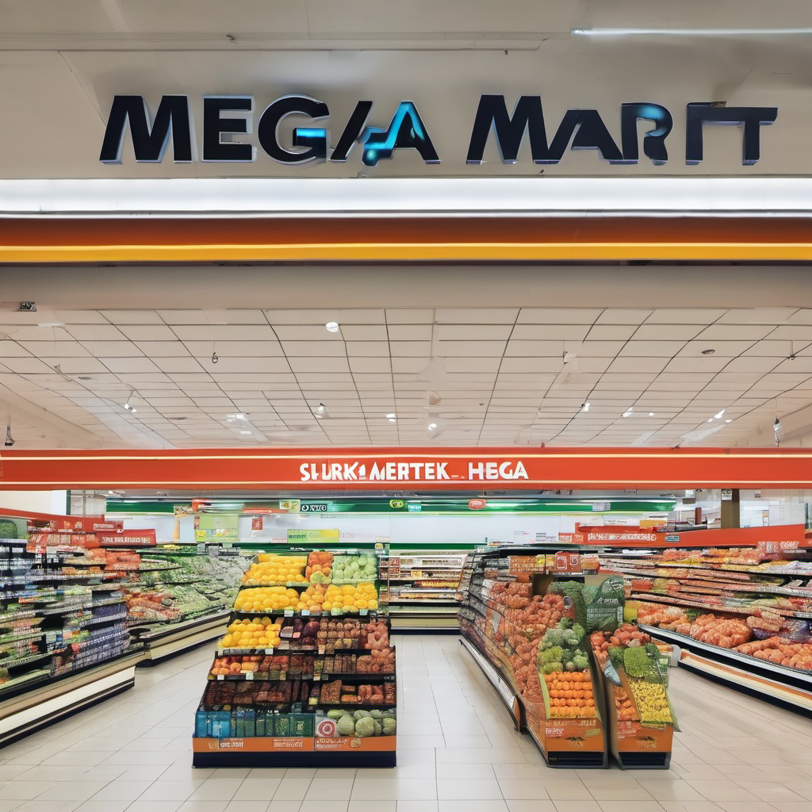

.png)
We have our supermarket in two branches. Also we are hoping to open a new branch soon!
Colombo Mega Mart branch
This supermarket is situated in Colombo 07, near Ladies College. This is the main branch of Mega Mart. Has a huge car park. You can shop for anything on your mind, like food and beverages, cosmetics, electric devices, etc.
Galle Mega Mart branch
.png)
This supermarket is situated on Galle Main Road. This is the second-only branch related to Mega Mart. You can also shop for anything here, just like at the Colombo branch, but the car park is a bit smaller compared to the Colombo one.
| Service | Description | Benefits | Availability | Cost |
|---|---|---|---|---|
| Extended Hours | Supermarkets open early (e.g. 7am) and close late (e.g. 11:30pm) to accommodate customer needs | Allows customers to shop at convenient times, even late at night or early morning | All Mega Mart branches | No additional cost |
| Delivery | Supermarkets offer home delivery, either through their own staff or third-party providers like Uber Eats | Convenient for customers without transportation or limited time, can increase average order size | Colombo and Galle branches | Delivery fee applies |
| Payment Options | Supermarkets accept a variety of payment methods including cash, cards, mobile payments, and vouchers | Accommodates diverse customer preferences and optimizes checkout flow | All Mega Mart branches | No additional cost |
| These core services help supermarkets differentiate themselves, increase customer convenience, and drive sales. | ||||